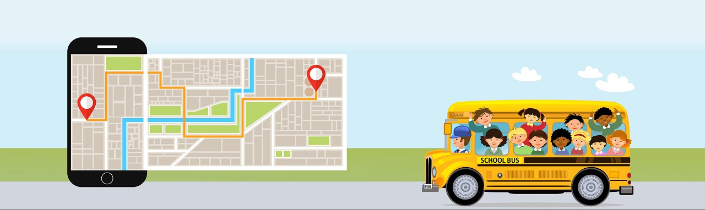

Real Time Tracking
Lets you be in touch with your close ones always.

Keep track of your school buses in real-time with a comprehensive transport management solution.
Good things take time
but that doesn't allow your bus to be late :)
A complete track can be kept of the buses of the college. The display at the passenger’s end acts as a time saver.
Due to this, an ideal system of bus transport is established by us for college purposes. The automatic routing, planning, and scheduling of bus stops help to save time, so no more long waits!